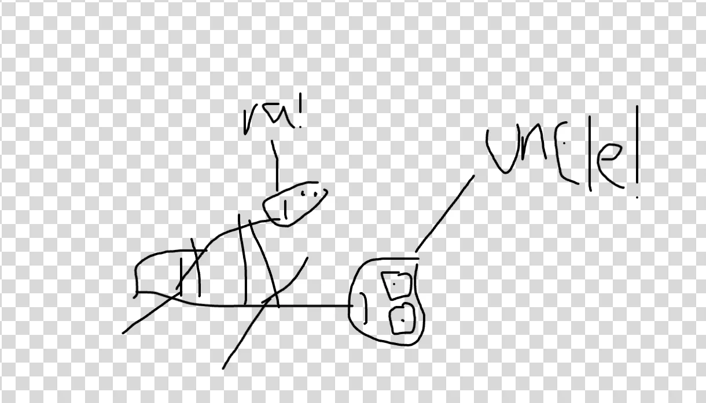
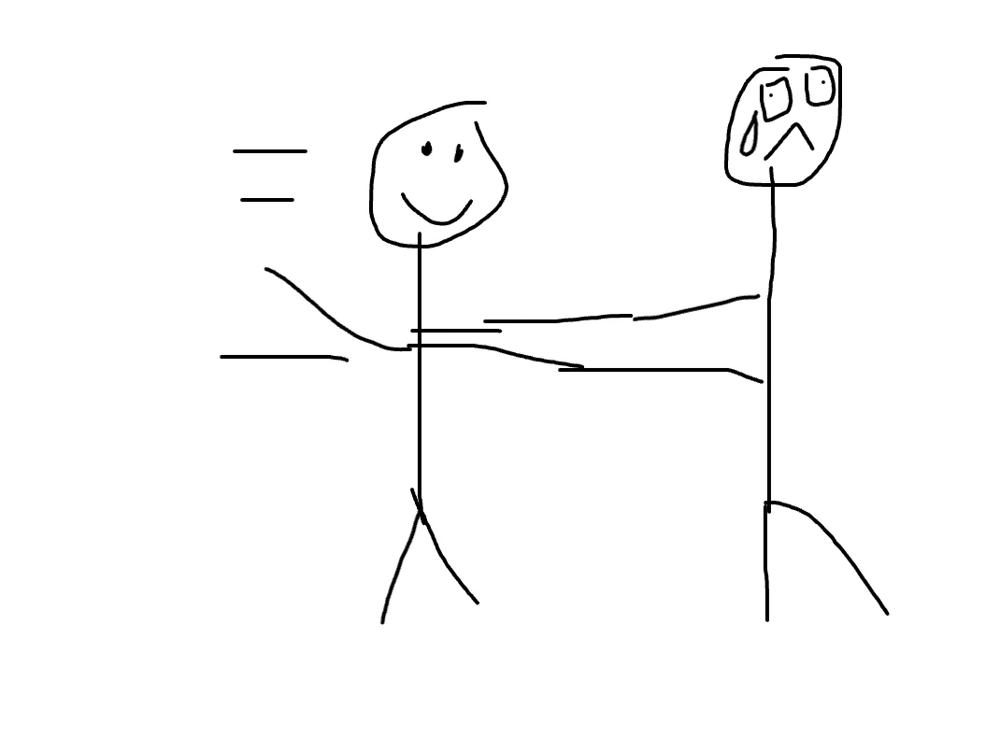
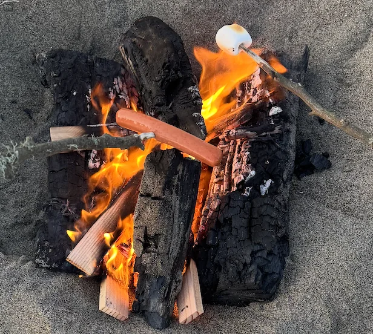
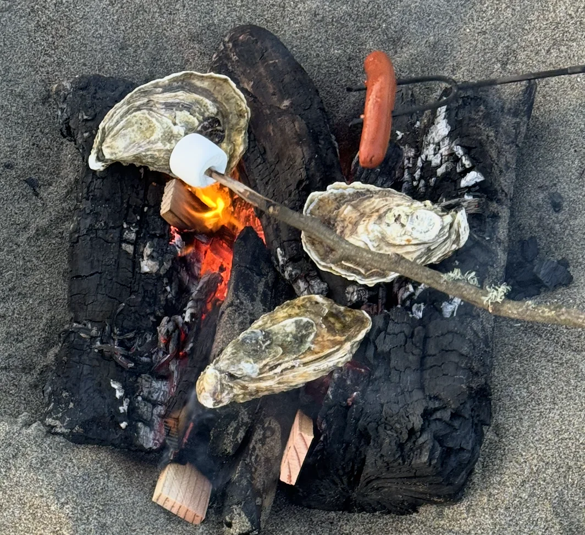

If this is your first time here and want to read previous newsletters they are all in this folder
Monday
Today I went to work and went home. Nothing too interesting.
Tuesday
Today I went to work and went home. Originally I had wanted to go play squash but it turns out my knee hadn’t fully recovered yet. In lieu of that I did play spikeball with some folks in Panhandle which was fun.
Wednesday
Today after work I really wanted to go to run club but unfortunately the knee vetoed this. At this point I feel like a slug. A sluggy slug slug that slugs.
This is what I feel like right now.
Instead I went to a friends going away party. Turns out one of my friends quit his job and is gonna go be a monk in China for month along with some other assorted Asia travels. So to celebrate this he had a Shaolin movie night where he ordered a bunch of Chinese food.
In the background we had Drunken Master and Shaolin Soccer playing. Drunken Master was made back in 1978 and admittedly its age did show a bit with regards to the sound effects. It sounded like all the martial arts effects were someone bending a big piece of paper, but in a funny way!
Thursday
Today after work I went to go see the Minecraft movie with some coworkers and it was quite good! I didn’t walk out or fall asleep once! This may sound small, dare I say normal but those who know me and my history with movies understand that in and of itself is high praise. I don’t have a letterboxd or anything like that but I’ll write a review of the movie here as if I did
The Minecraft movie is very honest in what it tries to do. Is it gonna be the next Titanic, Everywhere all at Once, or some other movie where I’m deeply invested in the character development, themes, or societal commentary? Hell no. Its a fun comedy about people hanging out in the minecraft world. It speeds past the initial character setup not even pretending to give anything close to a compelling setup. This itself is actually a charm in a so bad its good kinda way. The jokes of the movie were overall quite good and I laughed quite a bit. My favorite was when a character called the garbageman was flirting with a middle aged principle and she said “you can bag me and take me to the curb anytime”. Jack Black brought his usual brand of goofy entertainment and Jason Mamoa was also on point. There were some other kid actors there who were perfectly adequate.
As someone who generally likes great antagonists I’ll be the first to say that the antagonist of this movie wasn’t great by any traditional means of judging antagonists but she worked for the movie. There was a fun joke in how she was defeated which I won’t spoil in case anyone reading this is gonna go see the movie.
All in all a solid shameless comedy and so far its my pick for movie of the year. The fact I haven’t seen other movies this year is irrelevant.
Friday
Today after work I hosted a board game night with “The Raja of Rhythm”, “The Plower”, “The Doctor”, “The Quant”, and “The Doctor”’s sister. We wound up playing a lot of Coup and Chameleon. I think I need to start making a Partiful for these because I realize I’m very inconsistent with inviting people mainly because I go off of who I can remember whenever I make these events only to rush invite people on the last day and naturally many folks are busy then.
Unfortunately while playing Chameleon I faced some (read this part in Trump’s voice) “nasty nasty allegations” from “The Plower” that I cheated in Chameleon by giving myself whatever role I wanted when shuffling the cards. Naturally these allegations were completely unfounded and I beat them but I suppose its worth mentioning.
We play Coup for a while and our games slowly become more and more cursed. We continually remove such trifles as rules restricting when you can take coins and when you can take turns. Our pent up chaos demons truly take the wheel here in the funniest way possible.
Once the game night ended I went with “The Raja” to check out one of the local bars in my neighborhood. He hadn’t really checked out any around here and was interested to see what the scene was like. We went into a bar that had a lot of older people in it. This bar had been around for a while (I think 100 years or so) and they had some old pictures from back in the day. I had walked by this bar quite a bit but hadn’t actually been in it until now.
Saturday
The day starts as it generally does with trash pickup which is a smashing hit as usual. After trash pickup I hang out in Golden Gate Park for a while. Initially I came there for a wrestling event only to learn that the wrestling event was actually tomorrow instead. I wander around the park for a while only to come across a pickup Volleyball area in the park.
I recently rewatched some Haikyuu and figured I could pull off an epic jump serve or something like that. Unfortunately these games take a while and it seems there are a good number of people in line already so after waiting for like half an hour I give up and decide to resume my wandering.
After a while of that I go over to “The Doctor”’s place for a movie night. When I get there we wind up pivoting to a game night with a movie in the background. In terms of games we play Exploding Kittens, Resistance, and Coup. I don’t do well at many of the games today which isn’t a big deal in and of itself but I do notice it triggered my competitive side which I don’t like. This happened before during an intense Dune game a while back and its something I want to try to work on and improve. The best way to do so is probably to acknowledge it before I start playing any board game with folks so I can mentally tell myself its just a game and to relax. It doesn’t help that the movie playing in the background does distract folks from the game which led to a couple hiccups but that aside I want to get better here.
From there I wind up going to a friends birthday party. When I get there it turns out the birthday party was just 3 people with me being the 4th. To be fair the birthday boy did plan this at the last minute but I do feel a bit bad for the small turnout and kinda wished I had come earlier but given the last minute nature of the whole thing I did want to go to the movie / game night I had already committed to as well. We hang out and talk for about half an hour before the party dies down.
I hang out with “The Philosopher” for a while as we walk around and go to The Geary Club to talk with strangers. On the way there “The Philosopher” asks me what I value in life. I think about this for a bit and ultimately land on the following.
I value friends and family
I value religion
I value doing interesting things without radically changing my life
I value health
The 3rd one is interesting since he mentions that I wouldn’t do anything too crazy like quit my job and go to China to be a monk (he is also friends with the guy from Wednesday). I realize that thats true and I’m largely happy with my life and am not really looking to make any major changes, moreso try new things that fit into my existing life structure. I flip the question back around on him and he says that its impossible to determine values in life directly and instead they are derived from actions. In other words he didn’t answer the question. Big sad!
We get to The Geary Club and start talking with a couple of the people there. For context The Geary Club is a dive bar over in The Tenderloin so the people I talk with are definitely outside my normal distribution. The main guy we end up talking with is a 30 year old going to college dealing with some relationship trouble. To be honest I realize shortly after starting to talk with him that I don’t really vibe with him all that much. Because of this I give him a fake name and lie about pretty much every aspect of my life. I tell him I’m “Frank” a former gardener who is just bumming around not really doing anything with my life. The only true things he learns about me are because “The Philosopher” tells him a couple true things before I make it clear I intend to improvise my way through this entire conversation. Shoutout to “The Philosopher” this thing is much more his scene and I do applaud his ability to talk with a wide variety of people. I consider myself pretty outgoing but its clear there are some folks I’m less inclined to talk to and I do want to get better at that. Perhaps I start going to The Geary Club with “The Philosopher” more often. Another factor that makes it difficult is that I start getting tired and around midnight I give up and head home.
Sunday
Today I go to trash pickup and leave before picking up trash. The reason I go is because I have two friends who I really want to introduce to each other. “The Raja of Rhythm” has played guitar for a while and wants to get more into writing and “The Writer” is writing a book series right now and is picking up guitar for the first time. And they are both very kind / thoughtful people so I think they’d go great together! Unfortunately I don’t get the chance to do this today but mark my words it will happen, and the crossover episode will go great!
The reason I skip trash pickup is to go on a run with “The Enablers”. I’m a bit nervous since my knee just started feeling a bit better but thankfully I actually manage to keep up them and even wind up leading a good chunk of the run! Way back in episode 4 I go for a run with some of these guys and massively struggle to keep up, so this is a huge improvement! Granted they may have been going slower but still! The weather was great so got some great pics along The Embarcadero and Fort Mason. Thankfully it wasn’t a long run, only a few miles.
After the run we go to brunch over at Board and Drink. Naturally I don’t get anything because the airlines are still asking me if I need two seats. However that doesn’t stop me from writing a yelp review anyway. The reason I’m doing this is because I want to try to make Yelp Elite without actually eating at any of the restaurants I review. I think it will be really funny.
After brunch I go and wrestle in GGP. I found this event by looking at Partiful and seeing open invite events. I saw this and it seemed interesting. To be honest wrestling isn’t really my forte and I struggle a lot. But the whole point of this event is to struggle rather than to win. To return to what its like to be a monkey struggling in the jungle. Well I definitely accomplished the mission there. We play a variety of games including one where you try to push the opponent until they lose their footing, one where you try to lock hands and poke your opponent, and one where you try to take your opponents sock off. That last one threw me to the ground and made me give up rather quickly.
\


It was fun though and I’m glad I did it despite what the pictures above indicate! Definitely something I hadn’t done before.
After this I hang out in GGP with “The Doctor” and “The Doctor’s sister”. We hang out in the park for a bit and then go to a Japanese place. Unfortunately since I ate there I can’t write a Yelp review for it but the lamb chop was actually good!
From there I go to a bonfire with “The Philosopher” and “The Juggler”. Turns out some of “The Juggler”’s friends are in town so they have a bonfire over by Ocean Beach. They have some kosher beef sausages which are great, some turkey sausages which are meh, and some oysters which are like the Dune 2 of food.


Unfortunately I get a bit of a headache and I get really cold so I call it about an hour in. I then go home and I’m too tired to write the newsletter unfortunately so I save that task for tomorrow.